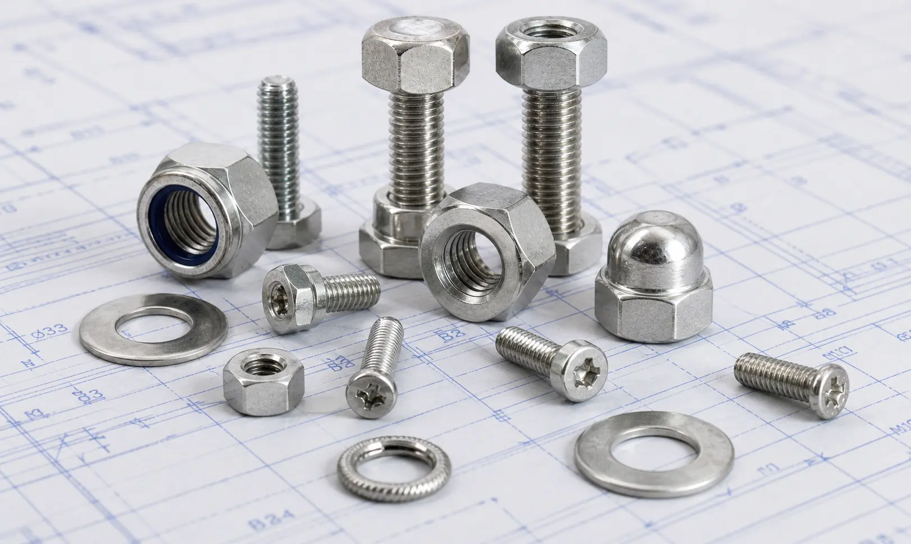

Gururaj Infradesigns manufactures Stainless Steel 321 Fasteners including bolts, nuts, stud bolts, washers, and anchor bolts for power generation, petrochemical, heat exchanger, furnace, and thermal processing applications.
Stainless Steel 321 Fasteners are specially designed for applications involving elevated temperatures and continuous thermal exposure. The addition of titanium helps stabilize the material against chromium carbide precipitation, allowing it to maintain corrosion resistance and mechanical properties after welding and prolonged exposure to high temperatures. Gururaj Infradesigns is a trusted Stainless Steel 321 Fasteners Manufacturer in India, supplying high-quality fastening solutions for thermal processing, power generation, petrochemical, and engineering industries.
Our range includes hex bolts, stud bolts, anchor bolts, U bolts, hex nuts, washers, and socket head bolts manufactured to meet industrial standards and demanding service requirements.

Stainless Steel 321 is a titanium-stabilized austenitic stainless steel grade developed for applications where resistance to intergranular corrosion and elevated-temperature performance are important. The titanium content prevents chromium carbide precipitation during welding and high-temperature service, helping maintain the material's corrosion resistance.
As a specialized grade within the broader range of Stainless Steel Fasteners, Stainless Steel 321 Fasteners are widely used in heat exchangers, exhaust systems, thermal processing equipment, and power generation facilities where conventional stainless steel grades may be exposed to elevated temperatures for extended periods.
| Property | Details |
|---|---|
| Grade | Stainless Steel 321 |
| Product Types | Hex Bolts, Stud Bolts, Anchor Bolts, U Bolts, Hex Nuts, Washers, Socket Head Bolts |
| Standards | ASTM, ASME, DIN, ISO |
| Sizes | M3 to M100 and Custom Sizes |
| Thread Type | Metric, UNC, UNF, BSW |
| Forms | Bolts, Nuts, Studs, Washers |
| Finish | Plain, Bright, Polished, Passivated |
| Certification | Mill Test Certificates Available |
The titanium-stabilized composition allows Stainless Steel 321 Fasteners to perform reliably in applications involving prolonged exposure to elevated temperatures and thermal cycling.
The addition of titanium helps prevent carbide precipitation, reducing the risk of intergranular corrosion after welding or high-temperature service.
Stainless Steel 321 offers corrosion resistance comparable to standard austenitic stainless steels while providing improved performance at higher operating temperatures.
These fasteners can be fabricated and welded without significantly affecting corrosion resistance, making them suitable for fabricated equipment and industrial assemblies.
Their ability to withstand both corrosive and high-temperature environments contributes to longer service life and reduced maintenance requirements.
| Element | SS 321 (%) |
|---|---|
| Carbon | Max 0.08 |
| Chromium | 17.0 – 19.0 |
| Nickel | 9.0 – 12.0 |
| Titanium | 5 × (C+N) Min |
| Manganese | Max 2.0 |
| Silicon | Max 1.0 |
| Phosphorus | Max 0.045 |
| Sulfur | Max 0.030 |
| Property | SS 321 |
|---|---|
| Tensile Strength | 515 MPa Min |
| Yield Strength | 205 MPa Min |
| Elongation | 40% Min |
| Hardness | 95 HRB Max |
Stainless Steel 321 Fasteners are widely used in boilers, turbines, heat recovery systems, and other power generation equipment exposed to elevated temperatures and thermal cycling.
These fasteners are commonly specified for heat exchangers, industrial furnaces, and thermal processing equipment where maintaining mechanical integrity at high temperatures is essential.
Petrochemical plants and refineries utilize Stainless Steel 321 Fasteners in processing equipment, piping systems, and structural assemblies operating under high-temperature conditions.
The excellent resistance to thermal fatigue makes this grade suitable for exhaust manifolds, emission control systems, and other high-temperature automotive and industrial applications.
Many manufacturing plants use Stainless Steel 321 Fasteners in equipment and machinery that operate under continuous heat exposure, ensuring reliable fastening performance and long service life.
| Grade | Key Characteristics | Typical Applications |
|---|---|---|
| SS 304 & 304L | General-purpose corrosion resistance | Fabrication, Food Processing |
| SS 316 & 316L | Enhanced chloride resistance | Marine, Chemical Processing |
| SS 321 | High-temperature stability and weldability | Thermal Systems, Heat Equipment |
Stainless Steel 321 Fasteners are specifically designed for elevated-temperature service conditions where thermal stability is important. For general industrial applications, industries commonly use Stainless Steel 304 & 304L Fasteners, while Stainless Steel 316 & 316L Fasteners are often selected for marine and chloride-rich environments requiring enhanced corrosion resistance.
| Industry | Reason for Selection |
|---|---|
| Power Generation | High-temperature performance |
| Petrochemical Plants | Thermal stability and corrosion resistance |
| Heat Treatment Facilities | Resistance to thermal cycling |
| Industrial Furnaces | Elevated-temperature durability |
| Process Industries | Weldability and long service life |
Stainless Steel 321 Fasteners are commonly specified for applications involving continuous heat exposure and fluctuating operating temperatures. Their ability to maintain corrosion resistance and mechanical properties at elevated temperatures makes them a preferred choice for thermal processing and high-temperature industrial systems.
Gururaj Infradesigns supplies Stainless Steel 321 Fasteners in various sizes, thread forms, and specifications to support industrial fastening requirements across thermal processing, power generation, petrochemical, and engineering sectors. Our products are manufactured to provide reliable performance, dimensional accuracy, and long-term durability in demanding operating conditions.
As a trusted supplier, we support EPC contractors, OEM manufacturers, fabricators, maintenance teams, and industrial buyers with dependable fastening solutions backed by consistent quality, technical support, and timely delivery.
Quality remains an important part of our manufacturing and supply process. All Stainless Steel 321 Fasteners undergo inspection for dimensional accuracy, thread quality, material integrity, and compliance with applicable standards to ensure reliable field performance.
As an ISO Certified Company, we are committed to maintaining consistent quality standards and supplying dependable fastening solutions for industrial and engineering applications.
Selecting the right fastener grade depends on factors such as operating temperature, corrosion exposure, welding requirements, and service conditions. Using the appropriate material can improve equipment reliability, reduce maintenance costs, and extend service life. Our team can assist in selecting the right fastener grade, size, thread type, and specification based on your project requirements. We support EPC contractors, OEMs, fabricators, and industrial buyers with practical guidance and dependable fastening solutions for critical industrial applications.